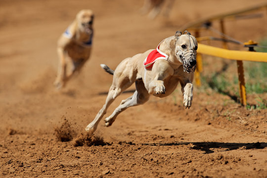

Events!
Check out future and past events!
Upcoming Events
- Greyhound Derby - March 15, 2025 | New York, USA
- Siberian Husky Snow Sprint - April 5, 2025 | Alaska, USA
- Border Collie Agility Race - May 20, 2025 | London, UK

Past Events
- Greyhound National Championship - January 10, 2025 | Los Angeles, USA - Winner: Lightning the Greyhound
- Siberian Husky Winter Dash - February 20, 2025 | Anchorage, Alaska - Winner: Blizzard the Husky
- Border Collie Speed Challenge - December 5, 2024 | Sydney, Australia - Winner: Zoom the Border Collie
- Golden Retriever Fun Run - November 18, 2024 | Toronto, Canada - Winner: Sunny the Golden Retriever
- European Dog Racing Championship - October 7, 2024 | Berlin, Germany - Winner: Rocket the Whippet